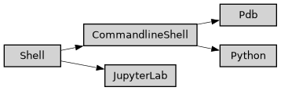

shell
Full name: ase2sprkkr.gui.shell
Module class hierarchy

Description
Classes, for opening ASE2SPRKKR in shell or Jupyter notebook
Functions
|
|
|
Format Python code as it would appear in a Python shell. |
|
Split Python code into top-level chunks. |
Classes
Run the given code in a commandline shell |
|
|
Run the given code in a JupyterLab notebook. |
|
Run the given code in a Python shell |
|
Run the given code in a Python shell |
|
A base class for ASE2SPRKKR interactive computation using ase2sprkkr tool |